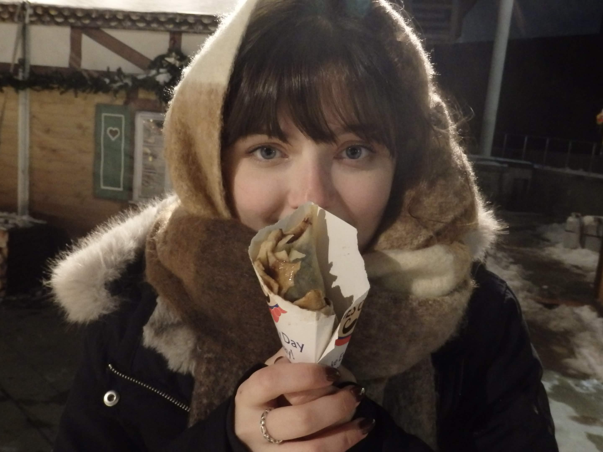

I am a twenty-year-old creative based in the Chicagoland area with experience spanning motion graphics and graphic design. I am currently pursuing a Bachelor of Arts in Interactive Media Studies with a concentration in Technology at North Central College. Additionally, I have two associates in Graphic Design & Animation. My work is driven by a strong passion for storytelling and video curation, with strengths in animation, visual effects, compositing, and scene structuring.
I have always loved video editing. Ever since the moment I first figured out which software did what, I knew it was something I wanted to pursue. My journey began in 2016 after watching an Instagram edit that paired two characters with music, inspiring me to create my own. The process of animation, compositing, tweening, and using other processes to create something especially memorable is everything I want to do in life.
I now have six years of experience working in Adobe After Effects and a growing list of both personal and professional projects. In late 2020, I created aseylum, my personal journey, a username and creative space on TikTok and Instagram that has since accumulated over 3,000 followers and ahlf a million views. Through this platform, I explore every corner of video editing; from animating comic book characters to editing scenes from TV shows and films. I love making it a personal statement that reflects not only my technical abilities, but also the media I’m most passionate about working with.
Although I focus on a video discipline, I also have tons of experience elsewhere. My undergraduate degree focused in a ton of different areas, but particularly focused on technology. I've taken computer science classes such as Python, HTML, CSS, and logic structures. ALl of this knowledge helped me even more when I started to advance into teaching myself expressions in After Effects. Expressions being majorly that of JavaScript.